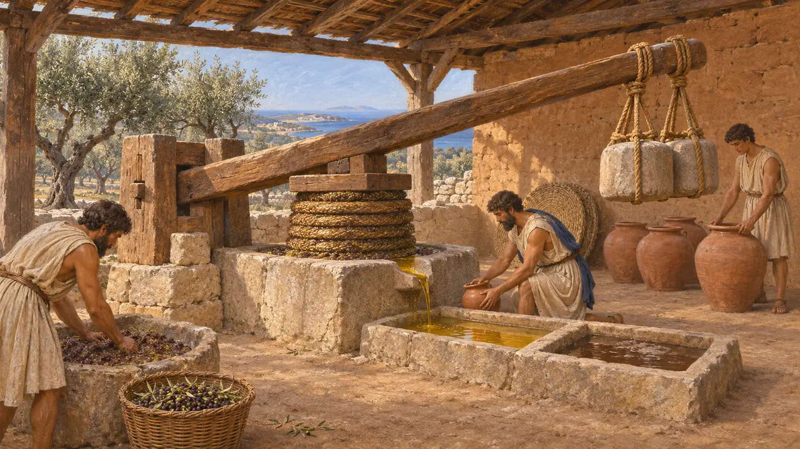
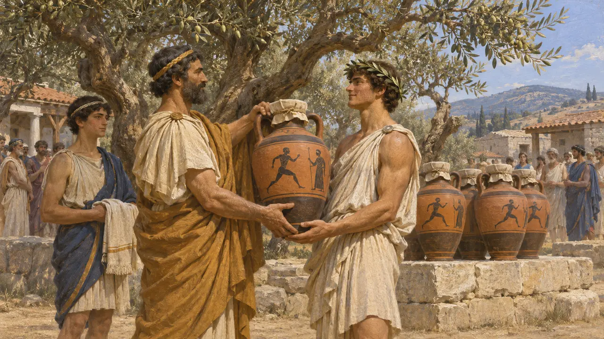
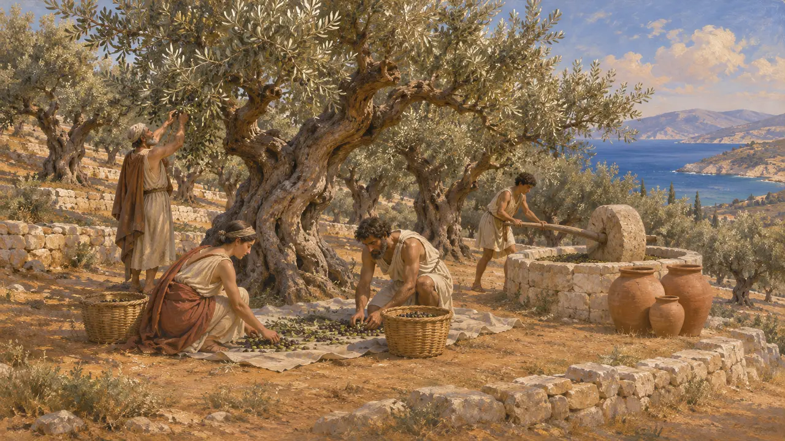
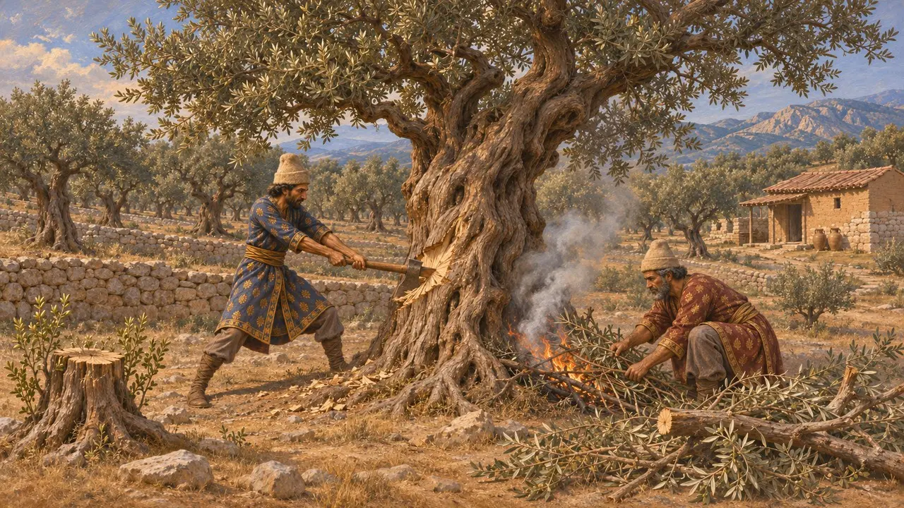
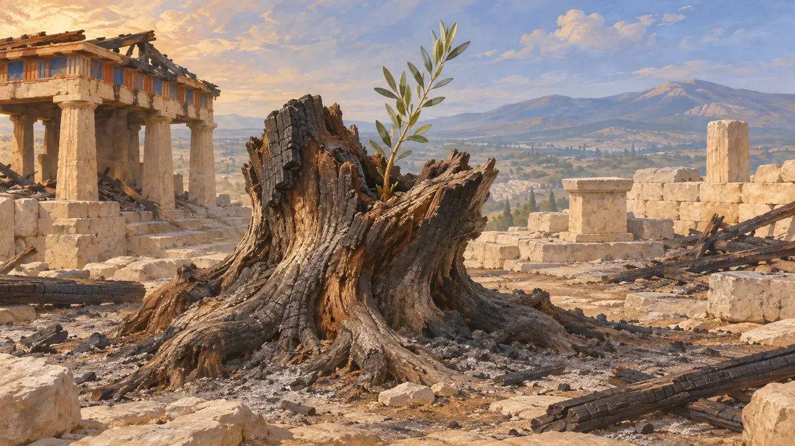

Olivar
Olivares y prensas de aceite de Grecia y las costas del Egeo, hacia 490-479 a. e. c.
En el juego: Nivel 8: La bahía de Maratón
En los años de las guerras médicas, los olivares cubrían las laderas secas de Grecia y las costas del Egeo, y su aceite servía de alimento, de combustible para las lámparas y de limpiador para bañistas y atletas. Escritores griegos posteriores afirman que, de todos los productos del campo, la ley ateniense solo permitía vender el aceite en el extranjero. Para un funcionario persa, el olivo señalaba el confín mediterráneo del imperio, lejos de las tierras del aceite de sésamo de Babilonia.
En el juego: En los niveles griegos, de Maratón a Platea, el Huerto frutal se convierte en un Olivar en terreno seco que no necesita suelo fluvial. Tarda en dar fruto, su aceite se prensa en la propia finca y las Casas del anciano lo demandan.

Arboledas y prensas en el suelo
En los documentosLas tablillas en lineal B de Cnosos y Pilos, escritas siglos antes de las Guerras Médicas, ya registran aceite de oliva, en gran parte perfumado. En yacimientos griegos arcaicos aparecen contrapesos de prensa de piedra, jarras de aceite y huesos de aceituna. En Clazómenas, en Jonia, ciudad bajo dominio persa desde la década de 540 a. e. c., los excavadores sacaron a la luz un taller probablemente del siglo VI. Allí se prensaban las aceitunas trituradas bajo una viga de madera con contrapeso, y se dejaba que el aceite se separase del jugo acuoso.
L. Foxhall, Olive Cultivation in Ancient Greece, 2007; excavation reports from Klazomenai

El aceite en la ley y las fiestas atenienses
Relato antiguoPlutarco, que escribía unos siete siglos después, afirma que Solón, a comienzos del siglo VI, permitió a los atenienses exportar aceite de oliva, pero ningún otro producto de la tierra. Añade que Solón fijó una distancia mínima entre un olivo recién plantado y la tierra del vecino. La Constitución de los atenienses, escrita en la escuela de Aristóteles hacia el 330, describe cómo el aceite de los olivos sagrados de Atenea se entregaba como premio en los juegos panateneos.
Plutarch, Solon 23-24; Aristotle, Athenaion Politeia 60

Aceite en el confín del imperio
Relato antiguoHeródoto afirma que la tierra de Babilonia ni siquiera intentaba dar olivos, y que los babilonios usaban en su lugar aceite prensado de sésamo. El olivo pertenecía al borde mediterráneo del imperio persa: la costa jonia y caria, Chipre, Fenicia y el Levante. Los ejércitos que pasaron a Grecia en 490 a. e. c. y 480 a. e. c. entraron en un país donde el olivo estaba por todas partes.
Herodotus 1.193

¿Podía un ejército destruir las arboledas?
En disputaUn olivar nuevo tardaba años en dar una buena cosecha, por lo que se creía que los invasores asestaban un duro golpe talándolo y quemándolo. Heródoto cuenta que Mardonio incendió Atenas antes de retirarse en el 479 a. e. c., aunque no habla de los olivares. Victor Davis Hanson sostuvo que los olivos maduros son difíciles de talar o quemar y rebrotan desde el tocón, de modo que la pérdida real eran unas pocas cosechas. Otros historiadores creen que las incursiones repetidas podían causar un daño duradero a las granjas.
V. D. Hanson, Warfare and Agriculture in Classical Greece, 1998; Herodotus 9.13

El olivo de Atenea en la Acrópolis
Leyenda posteriorLos atenienses creían que Atenea les había dado el olivo en su disputa con Poseidón por la tierra. Heródoto dice que los persas quemaron el árbol sagrado junto con el santuario en el 480 a. e. c., pero que al día siguiente había brotado del tocón un retoño de un codo de largo. También recoge la historia de que en otro tiempo los olivos no crecían en ningún lugar salvo en Atenas, afirmación que no concuerda con los testimonios.
Herodotus 8.55; Herodotus 5.82
Fuentes
- Herodotus 8.55
- Herodotus 1.193
- Plutarch, Solon 23-24
- Aristotle, Athenaion Politeia 60
- L. Foxhall, Olive Cultivation in Ancient Greece, 2007
- V. D. Hanson, Warfare and Agriculture in Classical Greece, 1998